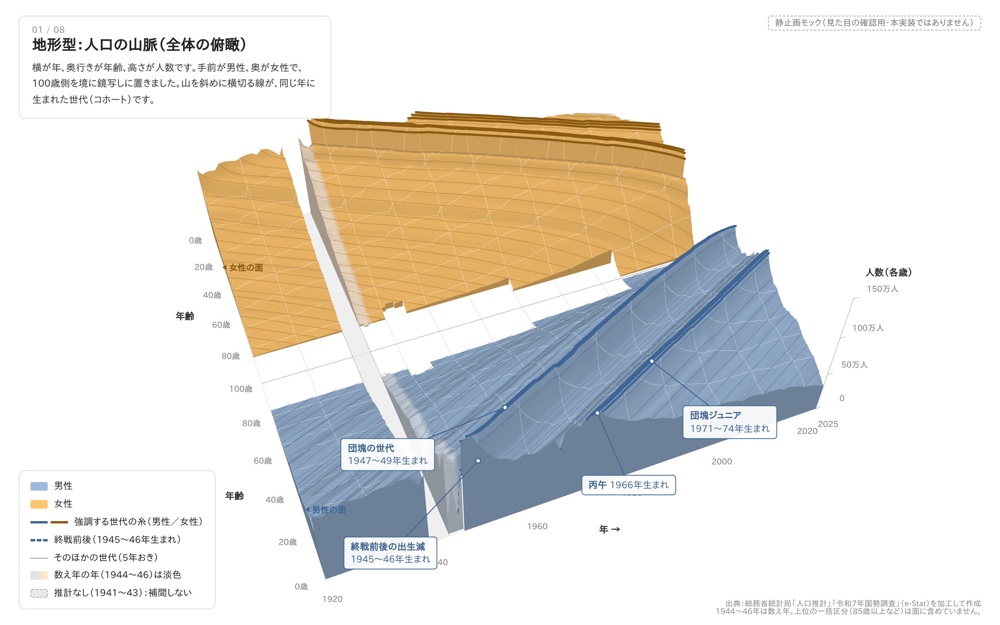

お使いの環境では3D表示を使えないため、静止画を表示しています。全国ページの人口ピラミッドは、そのままご利用いただけます。
日本の各歳・男女別の人口を、年・年齢・人数の3軸で立体にしました。スクロールすると、見る場所が切り替わります。
横が年（1920→2025）、奥行きが年齢（0→100歳）、高さが人数です。手前の面が男性、奥の面が女性で、100歳の側を境に鏡写しに置いています。
山脈の表面を斜めに走る細い線は、同じ年に生まれた世代の軌跡です。年が進むほど、世代は1歳ずつ年齢を重ねます。
総人口は、1920年の5,596万人から、2025年の1億2,297万人になりました。
1941〜1943年は年齢別の人口推計が行われていないため、表示していません。面にはすき間が空き、補間はしません。1944〜1946年の年齢は数え年です。その帯は淡く描き、世代の糸も破線にしています。
終戦前後の1945〜1946年生まれ（破線）は、出生が大きく減った世代です。1950年には、3歳（1947年生まれ）の235万人に対し、4歳（1946年生まれ）は154万人しかいません。
1947〜1949年に生まれた「団塊の世代」は、戦後の第1次ベビーブームの世代です。厚生労働省「人口動態統計」によると、出生数は1947年に2,678,792人、1948年に2,681,624人、1949年に2,696,638人でした。1947〜1972年の出生数には沖縄県を含みません。
強調した糸をたどると、この世代は2025年に76〜78歳で、合わせて約552万人です。
1966年は丙午（ひのえうま）の年です。出生数は、前年の1965年に1,823,697人、1966年に1,360,974人、翌1967年に1,935,647人でした（厚生労働省「人口動態統計」）。1947〜1972年の出生数には沖縄県を含みません。
糸は、2025年の断面ではここだけ谷を通ります。2025年には59歳で138万人と、58歳の178万人、60歳の170万人より少なくなっています。
団塊の世代の子どもにあたる1971〜1974年生まれは「団塊ジュニア」と呼ばれ、第2次ベビーブームを作りました。出生数は1971年に2,000,973人、1972年に2,038,682人、1973年に2,091,983人、1974年に2,029,989人で、1973年が最多です（厚生労働省「人口動態統計」）。1947〜1972年の出生数には沖縄県を含みません。
2025年には51〜54歳で、合わせて約791万人です。
団塊の世代（1947〜49年生まれ）の糸に沿って、男性の面の尾根のすぐ脇を低く飛びます。生まれた年から2025年まで、この世代が年齢を重ねていく道のりを、尾根の際からたどります。
左に見える高い尾根が団塊の世代、右の谷とその先の尾根が、後から生まれた世代です。画面に触れると止まります。
対応した環境では、団塊の世代の尾根に沿って、生まれた年から2025年まで低く飛ぶ視点を表示します。
2025年の断面が、いわゆる人口ピラミッドです。下がすぼまり、上が厚い形になっています。
このデータから計算すると、65歳以上は3,614万人で、人口の29.4%（75歳以上は17.2%）です。0〜14歳は1,335万人です。
2025年の出生数は671,270人で、1899年の調査開始以来最少になりました（厚生労働省「人口動態統計」）。
ドラッグで回転、ホイールやピンチで拡大・縮小できます。山脈や糸にカーソルを合わせる（スマートフォンではタップする）と、その地点の人数が出ます。
| 年齢 | 男性 | 女性 | 計 |
|---|
各年のいちばん上の段は「その年齢以上」をまとめた区分で、面には含めず、面の上端の外に小さな印で示します。